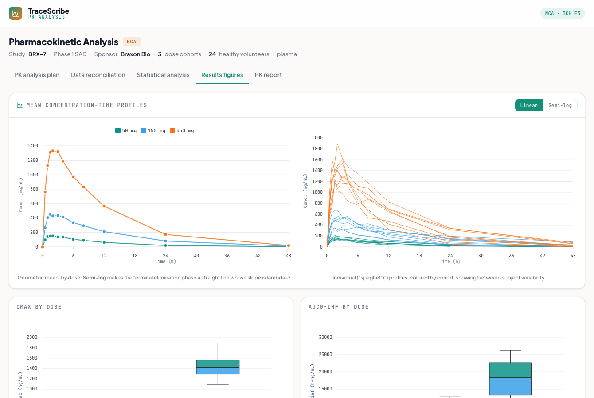

Pharmacokinetic Analysis
The full PK statistics workflow: a statistical analysis plan, bioanalytical-to-EDC sample reconciliation, non-compartmental analysis (NCA), and the standard PK result figures, on concentration-time data simulated from a 1-compartment model and run through a real NCA engine in the browser.
What it does
Takes a Phase 1 single-ascending-dose study from plan to report. Concentration-time data is simulated from a 1-compartment oral model, reconciled against the sample-collection records, run through non-compartmental analysis, summarized, and turned into the standard PK figures and the CSR PK section, every number computed, not hard-coded.
How it works
- PK analysis plan: the spec, PK-evaluable population, the NCA parameter list, BLQ rules, descriptive statistics (geometric mean / geo CV%, median (range) for Tmax), the dose-proportionality power model, and actual-vs-nominal time policy.
- Data reconciliation: bioanalytical concentrations matched to sample-collection records on subject + nominal time + sample ID, with actual-vs-nominal time deviations (+/-10%), missing/orphan samples, reassays, and sample-handling deviations flagged before the analysis can run.
- NCA engine: Cmax/Tmax read from the data; AUClast by linear-up / log-down trapezoidal; terminal lambda-z by best-fit log-linear regression (>=3 points, R-squared adj >= 0.70); AUC0-inf, t½, CL/F, Vz/F derived, with the BLQ rules applied (here all 24 subjects are evaluable).
- Statistics: a concentration summary by timepoint x dose, the PK parameter summary table (geometric mean, geo CV%), and dose proportionality, a power-model slope with a 95% CI that includes 1 across the 9-fold dose range.
- Results figures: mean concentration-time profiles with a linear / semi-log toggle, individual ("spaghetti") profiles, Cmax and AUC box plots by dose, and the dose-proportionality log-log scatter with the power-model fit.
- PK report: the assembled CSR Section 11.4 narrative, the in-text summary tables, the figures, and a TLF index.
A from-scratch recreation grounded in PK practice (NCA per Phoenix WinNonlin / R PKNCA conventions, the linear-up / log-down AUC, the lambda-z acceptance criteria, the BLQ rules, and the power model). The concentration data is simulated from a 1-compartment Bateman model with log-normal between-subject variability; the NCA, statistics, and figures are all computed in the browser, so the recovered parameters land on the simulation's targets.

Static preview - click to open the live, interactive demo